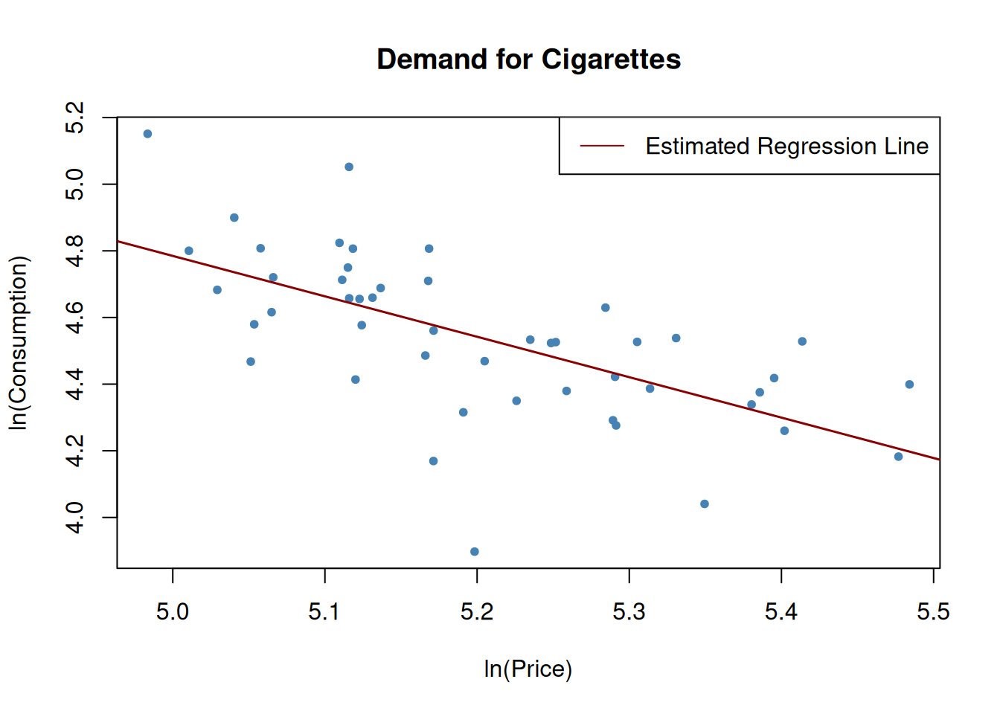
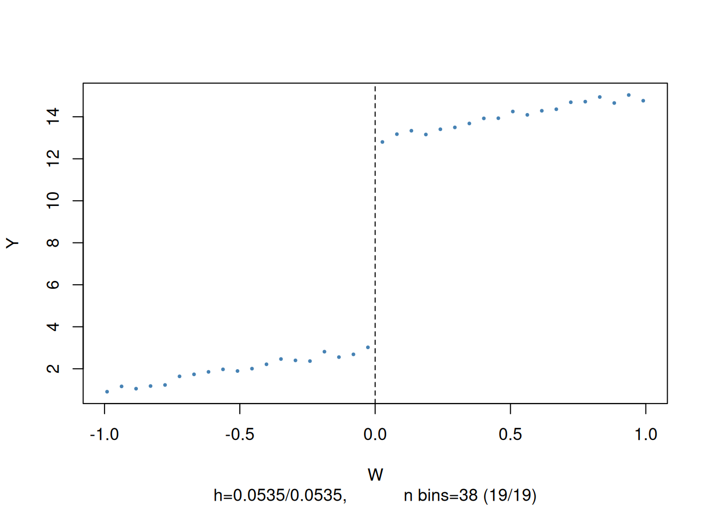
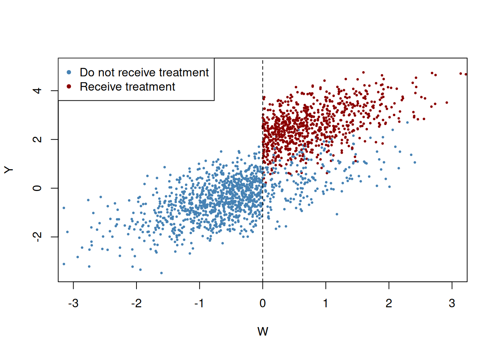

A number of assumptions underlying ordinary least square (OLS) regression come into close scrutiny under multiple linear regressions. Key assumptions include linearity, independence of residuals, homoscedasticity, normality of residuals.
Code
pacman::p_load( AER, tidyverse, mvtnorm, flextable, modelsummary, sandwich, stargazer, MASS, rddtools, scales, broom, prettyunits)data("CASchools", package ="AER")#' Render model coefficients as a flextable#'#' @param x model object#'#' @returns#' @export#'#' @examplesrender_summary <-function(x){ x %>% broom::tidy() %>%mutate(p.value = prettyunits::pretty_p_value(p.value)) %>%mutate(across(where(is.numeric), ~round(., 3))) %>% flextable::flextable()}#' Render a list of models as flextable#'#' @param models list object of models#' @param robust_se list object of robust standard errors#'#' @returns#' @export#'#' @examplesmodel_tables <-function(models, robust_se) {modelsummary( models,vcov = robust_se,# Applies your robust SEsoutput ="flextable",# Outputs as a flextable objectfmt =3,# 3 decimal placesstars =TRUE,# Significance stars (optional)# gof_map = gm1 # Clean up GOF statisticscoef_omit ="^\\(Intercept\\)$" ,gof_omit =NULL ) |>autofit() |>theme_vanilla() %>%# Clean academic style# This command removes any remaining horizontal lines inside the bodyborder_inner_h(part ="body", border = officer::fp_border(width =0))}
Code
#|fig-height: 18m <-lm(math ~ expenditure, data = CASchools)par(mfrow =c(2, 2))plot(m, col ="steelblue", pch =20)par(mfrow =c(1, 1))
Figure 1: OLS assumptions visual diagnostic
A plot of residuals vs. fitted values assesses linearity and homoscedasticity assumption. A random (white noise) scatter around 0 suggests the assumptions are met.
A normal quantile-quantile (Q-Q) plot assesses the normality assumption of the residuals with departure from the straight line suggesting departure from normality.
A plot of standardized residuals against fitted values assesses homoscedasticity assumption. Look for white noise around the horizontal line in the scale location plot.
The residual vs. leverage plot assesses for influential outliers. Points far away from the center are considered influential.
A number of factors may make multiple OLS regression biased due to a violation of any of the assumptions underlying OLS. Sources of these biases include:
omitted variables, misspecification of the functional form, measurement errors, missing data and sample selection, simultaneous causality bias.
omitted variables
There is no easy fix for addressing omitted variables as a source of bias. Available guidelines stress
specifying coefficient(s) of interest
Identifying important sources of omitted variable bias using available domain knowledge prior to model fitting so you end up with a a baseline model specification and a questionable list of other regressors
Using different model specification to test whether questionable regressors have effects different from zero
Providing full disclosure of your results such as results of different model specifications in support of your argument
The other sources of bias can be assessed via simulations.
Misspecification of the functional form of a regression function
Assume the underlying function is such that \(Y_i = X_i^2\), but the model is specified in the form \(Y_i = \beta_0 + \beta_1X_i + \epsilon_i\).
Set in due to imprecise measurement of the independent variable and do not disappear not even with a large sample size. Due to imprecise measurements we observe \(\overset{\sim}{X}_i\) instead of \(X_i\) the model under consideration becomes
where \(\overset{\sim}{X}_i\) and the error term \(v_i\) are correlated. The OLS would thus be biased and inconsistent for \(B_1\) with the strength of bias dependent on the correlation between the observed regressor \(\overset{\sim}{X}_i\) and the measurement error \(w_i = X_i - \overset{\sim}{X}_i\). The classical measurement error model assumes that the measurement error, \(w_i\), has zero mean and that it is uncorrelated with the variable, \(X_i\), and the error term of the population regression model, \(u_i\):
\[\begin{equation}
\overset{\sim}{X}_i = X_i + w_i, \ \ \rho_{w_i,u_i}=0, \ \ \rho_{w_i,X_i}=0.
\end{equation}\] Then it holds that \[\begin{equation}
\widehat{\beta}_1 \xrightarrow{p}{\frac{\sigma_{X}^2}{\sigma_{X}^2 + \sigma_{w}^2}} \beta_1,
\end{equation}
\tag{1}\] which implies inconsistency as \(\sigma_{X}^2, \sigma_{w}^2 > 0\) such that the fraction in (Equation 1) is smaller than \(1\). Note that there are two extreme cases:
If there is no measurement error, \(\sigma_{w}^2=0\) such that \(\widehat{\beta}_1 \xrightarrow{p}{\beta_1}\).
If \(\sigma_{w}^2 \gg \sigma_{X}^2\) we have \(\widehat{\beta}_1 \xrightarrow{p}{0}\). This is the case if the measurement error is so large that there essentially is no information on \(X\) in the data that can be used to estimate \(\beta_1\).
The most obvious way to deal with errors-in-variables bias is to use an accurately measured \(X\). If this is not possible, instrumental variables regression is an option. One might also deal with the issue by using a mathematical model of the measurement error and adjust the estimates appropriately: if it is plausible that the classical measurement error model applies and if there is information that can be used to estimate the ratio in equation (Equation 1), one could compute an estimate that corrects for the downward bias.
Code
dat <-data.frame(rmvnorm(1000, c(50, 100), sigma =cbind(c(10, 5), c(5, 10))))# set columns namescolnames(dat) <-c("X", "Y")# estimate the model (without measurement error)noerror_mod <-lm(Y ~ X, data = dat)# estimate the model (with measurement error in X)dat$X <- dat$X +rnorm(n =1000, sd =sqrt(10))error_mod <-lm(Y ~ X, data = dat)# print estimated coefficients to consolenoerror_mod$coefficients
(Intercept) X
74.7383283 0.5046925
Code
#> (Intercept) X #> 76.3002047 0.4755264error_mod$coefficients
(Intercept) X
88.8165365 0.2228252
Code
#> (Intercept) X #> 87.276004 0.255212#> # plot sample dataplot(dat$X, dat$Y, pch =20, col ="steelblue",xlab ="X",ylab ="Y")# add population regression functionabline(coef =c(75, 0.5), col ="darkgreen",lwd =1.5)# add estimated regression functionsabline(noerror_mod, col ="purple",lwd =1.5)abline(error_mod, col ="darkred",lwd =1.5)# add legendlegend("topleft",bg ="transparent",cex =0.8,lty =1,col =c("darkgreen", "purple", "darkred"), legend =c("Population", "No Errors", "Errors"))
Figure 3: Measurement error
Missing data and sample selection
If data is not missing at random, we are faced with biased estimates.
Code
# randmly select 500 obsid <-sample(1:1000, 500)dat1 <- dat[-id,]dat2 <- dat[id,]ci_mod <-lm(Y ~ X, data = dat1)plot( dat1$X, dat1$Y,col ="steelblue",pch =20,cex =0.8,xlab ="X",ylab ="Y")points( dat2$X, dat2$Y,cex =0.8,col ="grey",pch =20)# add pop reg functionabline(coef =c(75, 100),col ="darkgreen",lwd =1.5)# add full sample modelabline(noerror_mod, col ="black")# add model without a sample of 500abline(ci_mod, col ="purple")legend("bottomright",lty =2,bg ="transparent",cex =0.8,col =c("darkgreen", "black", "purple"),legend =c("population", "full sample", "random sample of 500"))
Figure 4: Missing data bias
Simultaneous causality bias
Arises when Y influences X. Let’s assume that we are interested in estimating the effect of 20% increase in price on cigarette. We get the log of price and use it to model consumption, giving a price elasticity of consumption interpretation. Since it is not demand on the Y-axis, this not an estimate of the demand curve, and is therefore a classic example of reverse (simultaneous) causality.
Code
data("CigarettesSW")c1995 <-subset(CigarettesSW, year =="1995")# estimate the modelcigcon_mod <-lm(log(packs) ~log(price), data = c1995)cigcon_mod
# plot the estimated regression line and the dataplot(log(c1995$price), log(c1995$packs),xlab ="ln(Price)",ylab ="ln(Consumption)",main ="Demand for Cigarettes",pch =20,col ="steelblue")abline(cigcon_mod, col ="darkred", lwd =1.5)# add legendlegend("topright",lty=1,col="darkred", "Estimated Regression Line")

Figure 5: Reverse causlaity bias
Instrumental variable regression
Simple instrumental variable regression
Instrumental variables (IV) can be used to address possible omitted variable bias. Considering a simple regression model
\[
\begin{equation}
Y_i = \beta_0 + \beta_1X_i + \epsilon_i, i = 1, \ldots, n
\end{equation}
\tag{2}\]
in which the error term is correlated with the endogenous regressor \(X\) making the OLS estimate inconsistent for \(\beta_1\), we can use a single IV variable \(Z\) to obtain a consistent estimator for \(\beta_1\). The IV variable has to meet the
relevance condition: \(X\) and its instrument \(Z\) must be correlated \(\rho_{Z_i, X_i} \ne 0\) or multicollinear for multiple IV regression.
instrument exogeneity condition: The instrument \(Z\) must not be correlated with the error term. \(\rho_{Z_i, \epsilon_i} = 0\)
Estimation is through a two-stage least square (TSLS) estimation. The first stage condenses the variation in the endogenous variable \(X\) into a problem-free part that is explained by the IV variable \(Z\), and a problematic component that is correlated to the error term \(\epsilon_i\). In the second stage the problem-free component of the variation in \(X\) is used to estimate \(\beta_1\).
The first stage uses the regression model \(X_i = \pi_0 + \pi_1Z_i + v_i\), where \(\pi_0 + \pi_1Z_i\) is the component of \(X_i\) explained by \(Z_i\), and \(v_i\) is the component that can not be explained by \(Z_i\) and is correlated with \(\epsilon_i\). We can use OLS estimates \(\hat{\pi_0}\) and \(\hat{\pi_1}\) to predict \(X_i\) giving problem-free \(\hat{X_i}\) (\(\hat{X_i}\) exogenous in the regression of Y on \(\hat{X}\) done on second stage ) if \(Z\) is indeed a valid instrument. The second stage produces \(\hat{\beta}_0^{TSLS}\), and \(\hat{\beta}_1^{TSLS}\), which are the TSLS estimates of \(\beta_0\) and \(\beta_1\) respectively. For a single IV it can be shown that the TSLS estimator is but the ratio of sample covariance between \(Z\) and \(Y\)
where \(Q_i\) is the number of cigarette packs per capita sold and \(P_i\) is the after tax average real price per pack of cigarette in state \(i\). We use sales tax (dollars per pack) to instrument the endogenous regressor \(log(P_i)\). Salestax is considered a relevant instrument as it is included in the after-tax average price per pack.
Code
# compute real per capita pricesCigarettesSW$rprice <-with(CigarettesSW, price / cpi)# compute the sales taxCigarettesSW$salestax <-with(CigarettesSW, (taxs - tax) / cpi)# check the correlation between sales tax and pricecor(CigarettesSW$salestax, CigarettesSW$price)
[1] 0.6141228
Code
#> [1] 0.6141228# generate a subset for the year 1995c1995 <-subset(CigarettesSW, year =="1995")
The first stage regression is \(log(P_i) = \pi_0 + \pi_1SalesTax_i + v_i\). In the second stage we regress \(log(Q_i)\) on \(log(P_i)\) to obtain \(\hat{\beta_0}^{TSLS}\)\(\hat{\beta_1}^{TSLS}\).
Code
# perform the first stage regressioncig_s1 <-lm(log(rprice) ~ salestax, data = c1995)coeftest(cig_s1, vcov = vcovHC, type ="HC1") %>% broom::tidy() %>%mutate(p.value = prettyunits::pretty_p_value(p.value)) %>% flextable::flextable()
term
estimate
std.error
statistic
p.value
(Intercept)
4.61654632
0.028917686
159.644388
<0.0001
salestax
0.03072886
0.004835432
6.354935
<0.0001
Code
# store the fitted values from first stagelcigp_pred <- cig_s1$fitted.values
with \(i=1,\dots,n\) is the general instrumental variables regression model where
\(Y_i\) is the dependent variable,
\(\\beta_0,\dots,\beta_{k+1}\) are \(1+k+r\) unknown regression coefficients,
\(X_{1i},\dots,X_{ki}\) are \(k\) endogenous regressors ,
\(W_{1i},\dots,W_{ri}\) are \(r\) exogenous regressors which are uncorrelated with \(u_i\),
\(\epsilon_i\) is the error term,
\(Z_{1i},\dots,Z_{mi}\) are \(m\) instrumental variables.
The coefficients are overidentified if \(m>k\). If \(m<k\), the coefficients are underidentified and when \(m=k\) they are exactly identified. For estimation of the IV regression model we require exact identification or overidentification. The computations can be autometed with AER::ivreg() function.
Suppose we wish to estimate the model \(Y_i = \beta_0 + \beta_1X_{1i} + \beta_2X_{2i} + W_{1i} + \epsilon_i\), where \(X_{1i}\) and \(X_{2i}\) are endogenous variables instrumented by \(Z_{1i}\) and \(Z_{2i}\) respectively, and \(W_{1i}\) is an exogenous variable, a correct model specification involves listing all exogenous variables as instruments too by joining them with +s on the right of the vertical bar |:
y ~ X1 + X2 + W1 | W1 + Z1 + Z2. A convenient way of specifying a model is updating a formula using . (which includes all variables except for the outcome). For instance, if we have one exogenous regressor \(w1\) and one endogenous regrossor \(x1\) with instrument \(z1\), the appropriate formula would be y ~ w1 + x1 | w1 + z1\(=\)y ~ w1 + x1 | . ~ x1 + z1.
Some assumptions underlying the IV regression are:
\(E(\epsilon_i|W_{1i}, \dots, W_{ri}) = 0\)
\((X_{1i}, \dots, X_{ki}, W_{1i}, \dots, W_{ri}, Z_{1i}, \dots, Z_{mi})\) are i.i.d draws from their joint distribution
All variables have nonzero finite fourth moment, i.e., outliers are unlikely
where income is defined as real per capita income.
Code
# add rincome to the datasetCigarettesSW$rincome <-with(CigarettesSW, income / population / cpi)c1995 <-subset(CigarettesSW, year =="1995")# estimate the modelcig_ivreg2 <-ivreg(log(packs) ~log(rprice) +log(rincome) |log(rincome) + salestax, data = c1995)coeftest(cig_ivreg2, vcov = vcovHC, type ="HC1") %>% broom::tidy() %>%mutate(p.value = prettyunits::pretty_p_value(p.value)) %>% flextable::flextable()
A question then arises on which estimates to trust. One could argue that the estimates from (Equation 9) are more trustworthy due to the lower standard errors compared to (Equation 8). This is the subject considered under instrument validity.
Checking instrument validity
Weak instrument: To check for a weak instrument, compute the \(F\)-statistic corresponding to the hypothesis \(H_0: Z_1 = \dots Z_m = 0\). A rule of thumb is that an \(F\)-statistic less than 10 imply weak instruments. If your instruments are weak, you can discard them and find better instruments or stick with them but find methods that improve TSLS.
Instrument exogeneity assumption is not met: When we observe a correlation between an instrument and the error term, the IV regression is not consistent. Overidentifying restriction test (J-test) is used to test that additional instruments are exogenous. It follows \(\chi^2_{m -k}\) (under homoscedasticity), where \(m\) is the number of instruments and \(k\) the number of endogenous regressors. It involves regressing the error term on all instruments and endogenous variables:
and testing whether all instruments are exogenous through the joint hypothesis \(H_0: \delta_1 = 0, \dots, \delta_m = 0\), and computing the statistic \(J = mF\). (see https://www.econometrics-with-r.org/12.4-attdfc.html)
Example: Demand for cigarettes
We assess whether general sales tax and the cigarette-specific tax are valid instruments. It could be argued that tobacco growing states find economic importance in lower tobacco taxes and may lobby for them staying low. It may also be possible that tobacco growing states have higher rates of smoking than others, which would lead to endogeneity of cigarette-specific taxes. This can only be solved by including data on the size of the tobacco and cigarette industry into the regression, which is not available in this case.
It can be assumed that the role of tobacco and cigarette industry differs across states, but not across time. We can then exploit the panel structure of the data at two different time periods (1985, 1995) to estimate the long-run elasticity of the demand for cigarettes:
coeftest(cig_ivreg_diff1, vcov. = vcovHC, type ="HC1") %>%render_summary()
Table 1: Difference in sales tax as IV
term
estimate
std.error
statistic
p.value
(Intercept)
-0.052
0.062
-0.832
0.4097
pricediff
-1.202
0.197
-6.105
<0.0001
incomediff
0.462
0.309
1.494
0.1423
Cigarette-specific tax as IV
Code
coeftest(cig_ivreg_diff2, vcov. = vcovHC, type ="HC1") %>%render_summary()
Table 2: Cigarette-specific tax as IV
term
estimate
std.error
statistic
p.value
(Intercept)
-0.017
0.067
-0.254
0.8009
pricediff
-1.343
0.229
-5.871
<0.0001
incomediff
0.428
0.299
1.433
0.1587
Both sales tax and cigarette-specific tax as IV
Code
coeftest(cig_ivreg_diff3, vcov. = vcovHC, type ="HC1") %>%render_summary()
Table 3: Both sales tax and cigarette-specific tax as IV
term
estimate
std.error
statistic
p.value
(Intercept)
-0.052
0.062
-0.832
0.4097
pricediff
-1.202
0.197
-6.105
<0.0001
incomediff
0.462
0.309
1.494
0.1423
A tabulated summary
Code
# 1. Define the models in a named list (this replaces column.labels)models <-list("IV: salestax"= cig_ivreg_diff1,"IV: cigtax"= cig_ivreg_diff2,"IVs: salestax, cigtax"= cig_ivreg_diff3)# Define which Goodness-of-Fit stats to show and what to call themgm <-list(list("raw"="nobs", "clean"="Observations", "fmt"=0),list("raw"="r.squared", "clean"="R2", "fmt"=3),list("raw"="adj.r.squared", "clean"="Adj. R2", "fmt"=3))# 2. Define standard errors# Note: modelsummary can calculate HC1 automatically, # but since you already have 'rob_se', we can pass it directly.rob_se_list <-list(sqrt(diag(vcovHC(cig_ivreg_diff1, type ="HC1"))),sqrt(diag(vcovHC(cig_ivreg_diff2, type ="HC1"))),sqrt(diag(vcovHC(cig_ivreg_diff3, type ="HC1"))))# 3. Generate the tablemodelsummary( models,vcov = rob_se_list, # Applies your robust SEsoutput ="flextable", # Outputs as a flextable objectfmt =3, # 3 decimal placesstars =TRUE, # Significance stars (optional)gof_map = gm # Clean up GOF statistics) |>autofit() |>theme_vanilla() %>%# Clean academic style# This command removes any remaining horizontal lines inside the bodyborder_inner_h(part ="body", border = officer::fp_border(width =0))
Table 4: Dependent Variable: 1985-1995 Difference in Log per Pack Price
IV: salestax
IV: cigtax
IVs: salestax, cigtax
(Intercept)
-0.052
-0.017
-0.052
(0.062)
(0.067)
(0.062)
pricediff
-1.202***
-1.343***
-1.202***
(0.197)
(0.229)
(0.197)
incomediff
0.462
0.428
0.462
(0.309)
(0.299)
(0.309)
Observations
48
48
48
R2
0.547
0.520
0.547
Adj. R2
0.526
0.498
0.526
+ p < 0.1, * p < 0.05, ** p < 0.01, *** p < 0.001
We observe negative estimates for pricediff that differ when cigtax is used as IV. We proceed to test the validity of the instruments by computing F-statistics for the first-stage regressions.
Table 5: Test IV relevance by an F-test. All the F-statistics are significantly different from zero
model
term
null.value
estimate
std.error
statistic
p.value
df.residual
df
salestax
salestaxdiff
0
0.025
0.004
33.674
<0.0001
45
1
cigartax
cigtaxdiff
0
0.010
0.001
107.183
<0.0001
45
1
both
salestaxdiff
0
0.013
0.003
88.616
<0.0001
44
2
both
cigtaxdiff
0
0.008
0.001
88.616
<0.0001
44
2
Next we conduct overidentifying restriction test for model with both sales tax and cigatax as IV which is the only model where the coefficient on the difference in log prices is overidentified (\(m = 2, k=1\)) making it possible to compute the \(J\) statistic. To achive this, we regress the residuals from cig_ivreg_diff3 on the IVs and the presumed exogenous regressor incomediff. We again test if the coefficients of the IV variables is zero, a condition necessary for exogenous variables.
Table 6: J-test statitic testing for exogeneity condition of IVs
term
null.value
estimate
std.error
statistic
p.value
df.residual
rss
df
sumsq
salestaxdiff
0
0.013
0.006
4.932
0.0849
44
0.337
2
0.038
cigtaxdiff
0
-0.004
0.002
4.932
0.0849
44
0.337
2
0.038
Note: The reported degrees of freedom is wrong, (2 instead of \(m-k = 2-1=1\)). The J-statistic is \(\chi^2_1\) instead of \(\chi^2_2\) as reported by the model. We calculate the correct p-value:
We reject the hypothesis that both instruments are exogenous at \(\alpha = 0.05\) and conclude that
sales tax is an invalid instrument for the per-pack price,
and so is the cigarette-specific tax,
and that both instruments are invalid.
Experiments and Quasi-experiments
Experiments give us the tools to conduct program evaluation interest being to measure causal effects of programs. The gold-standard for this kind of work is a randomized controlled experiment. In a quasi-experiment there are no randomized assignments to interventions, we study the processes in their natural setting.
Potential outcomes, causal effects and idealized experiments
Interest is in the average causal effect estimated by the difference estimator. A potential outcome is the outcome for an individual under a potential treatment. For this individual the causal effect of the treatment is the difference between the potential outcome if the individual receives the treatment and the potential outcome if they do not. We are interested in studying the average causal effect since this difference may vary from individual to individual. In a randomized controlled experiment, it is expected that 1. Subjects are randomly selected from the population(ensures average causal effect in sample equals average causal effect in population), 2. Subjects are randomly assigned to treatment and control group (ensures receiving a treatment is independent of a subject’s potential outcome).
If above conditions are met, then the average causal effect is the expected outcome in treatment group less expected outcome in the control:
where \(X_i\) is a binary treatment indicator. Estimation follows differences estimator which is an OLS regression model
\[
\begin{equation}
Y_i = \beta_0 + \beta_1X_i + \epsilon_i, i = 1, \dots, n
\end{equation}
\tag{12}\]
where random assignment ensures \(E(\epsilon_i|X_i) = 0\). The difference estimator in (Equation 12) can take additional regressors \(W_1, \dots, W_r\) and is called a differences estimator with additional regressors:
It utilizes a conditional mean independence assumption that states that treatment assignment \(X_i\) is random and independent of any pretreatment variable \(W_i\). This ensures that
implying that the conditional expectation of the error term \(\epsilon_i\), given the treatment indicator \(X_i\) and the the pretreatment characteristic \(W_i\) does not depend on \(X_i\).
### Analysis of experimental data
STAR data set from {AER} is a large student-teacher achievement ratio randomized controlled experiment that was assessing whether class size reduction is effective in improving education outcomes. 6400 students were randomly assigned into one of the three interventions: small class (13 to 17 students per teacher), regular class (22 to 25 students per teacher), and regular-with-aide class (22 to 25 students with a full-time teacher’s aide). Teachers were also randomly assigned to classes. The subjects were followed from kindergarten to grade 3 (K,1, 2, 3 suffixes in variable names).
Code
data("STAR", package ="AER")skimr::skim(STAR)
Warning: Couldn't find skimmers for class: yearqtr; No user-defined `sfl`
provided. Falling back to `character`.
Data summary
Name
STAR
Number of rows
11598
Number of columns
47
_______________________
Column type frequency:
character
1
factor
34
numeric
12
________________________
Group variables
None
Variable type: character
skim_variable
n_missing
complete_rate
min
max
empty
n_unique
whitespace
birth
70
0.99
4
7
0
21
0
Variable type: factor
skim_variable
n_missing
complete_rate
ordered
n_unique
top_counts
gender
20
1.00
FALSE
2
mal: 6122, fem: 5456
ethnicity
145
0.99
FALSE
6
cau: 7193, afa: 4173, asi: 32, his: 21
stark
5273
0.55
FALSE
3
reg: 2231, reg: 2194, sma: 1900
star1
4769
0.59
FALSE
3
reg: 2584, reg: 2320, sma: 1925
star2
4758
0.59
FALSE
3
reg: 2495, reg: 2329, sma: 2016
star3
4796
0.59
FALSE
3
reg: 2543, sma: 2174, reg: 2085
lunchk
5296
0.54
FALSE
2
non: 3250, fre: 3052
lunch1
4947
0.57
FALSE
2
fre: 3430, non: 3221
lunch2
5102
0.56
FALSE
2
fre: 3336, non: 3160
lunch3
5078
0.56
FALSE
2
fre: 3293, non: 3227
schoolk
5273
0.55
FALSE
4
rur: 2917, inn: 1428, sub: 1412, urb: 568
school1
4769
0.59
FALSE
4
rur: 3237, sub: 1586, inn: 1380, urb: 626
school2
4758
0.59
FALSE
4
rur: 3167, sub: 1710, inn: 1481, urb: 482
school3
4796
0.59
FALSE
4
rur: 3240, sub: 1720, inn: 1335, urb: 507
degreek
5294
0.54
FALSE
4
bac: 4119, mas: 1981, mas: 161, spe: 43
degree1
4788
0.59
FALSE
4
bac: 4456, mas: 2294, spe: 38, phd: 22
degree2
4819
0.58
FALSE
4
bac: 4249, mas: 2427, spe: 67, phd: 36
degree3
4862
0.58
FALSE
3
bac: 3762, mas: 2885, spe: 89, phd: 0
ladderk
5869
0.49
FALSE
6
lev: 4671, app: 514, pro: 334, lev: 119
ladder1
4811
0.59
FALSE
6
lev: 4492, app: 718, pro: 666, not: 506
ladder2
4878
0.58
FALSE
6
lev: 4703, not: 754, app: 482, pro: 411
ladder3
4847
0.58
FALSE
6
lev: 4437, pro: 550, not: 497, lev: 484
tethnicityk
5335
0.54
FALSE
2
cau: 5232, afa: 1031
tethnicity1
4822
0.58
FALSE
2
cau: 5592, afa: 1184
tethnicity2
4819
0.58
FALSE
2
cau: 5398, afa: 1381
tethnicity3
4847
0.58
FALSE
3
cau: 5328, afa: 1409, asi: 14
systemk
5273
0.55
FALSE
42
11: 1788, 18: 360, 22: 319, 6: 228
system1
4769
0.59
FALSE
42
11: 1757, 22: 508, 18: 269, 12: 240
system2
4758
0.59
FALSE
41
11: 1908, 22: 495, 18: 312, 12: 263
system3
4796
0.59
FALSE
41
11: 1792, 22: 473, 18: 302, 12: 246
schoolidk
5273
0.55
FALSE
79
27: 156, 28: 154, 51: 146, 22: 137
schoolid1
4769
0.59
FALSE
76
51: 238, 63: 149, 27: 142, 9: 134
schoolid2
4758
0.59
FALSE
75
51: 235, 27: 146, 22: 141, 9: 140
schoolid3
4796
0.59
FALSE
75
51: 207, 58: 147, 9: 146, 66: 139
Variable type: numeric
skim_variable
n_missing
complete_rate
mean
sd
p0
p25
p50
p75
p100
hist
readk
5809
0.50
436.73
31.71
315
414
433
453
627
▁▇▅▁▁
read1
5202
0.55
520.78
55.19
404
478
514
558
651
▂▇▇▅▃
read2
5521
0.52
583.93
46.04
468
552
582
614
732
▂▇▇▃▁
read3
5598
0.52
615.41
38.57
499
588
614
641
775
▁▇▇▂▁
mathk
5727
0.51
485.38
47.70
288
454
484
513
626
▁▁▇▅▂
math1
4998
0.57
530.53
43.10
404
500
529
557
676
▁▆▇▃▁
math2
5533
0.52
580.61
44.57
441
550
579
611
721
▁▃▇▃▁
math3
5521
0.52
617.97
39.84
487
591
616
645
774
▁▅▇▂▁
experiencek
5294
0.54
9.26
5.81
0
5
9
13
27
▇▇▇▂▁
experience1
4788
0.59
11.63
8.94
0
4
10
17
42
▇▆▃▁▁
experience2
4860
0.58
13.15
8.65
0
7
12
18
40
▇▇▅▂▁
experience3
4847
0.58
13.93
8.61
0
7
14
19
38
▆▇▆▂▁
In essence, there were 2 treatments in each grade (small class with 13 - 17 students, and a regular class with 22 - 25 students and a teaching aide). We introduce two binary variables, each being an indicator for the respective treatment group for the difference estimator. This is to capture the treatment effect for each treatment group separately yielding the population regression model for the test score as
grades <-c("k",1:3)# map over grades to create a list of modelsstar_models <- grades |>set_names(paste0("grade_", grades)) |>map( \(y){# construct the formula dynamically: I(ready + mathy) ~ starY form <-as.formula(paste0("I(read", y, "+ math", y, ") ~ star", y))lm(form, data = STAR) } )# compute robust standard errorrob_se <- star_models |>map(\(m) sqrt(diag(vcovHC(m, type ="HC1"))))# Define which Goodness-of-Fit stats to show and what to call themgm1 <-list(list("raw"="nobs", "clean"="Observations", "fmt"=0),list("raw"="r.squared", "clean"="R2", "fmt"=3),list("raw"="adj.r.squared", "clean"="Adj. R2", "fmt"=3),# Added Residual Standard Errorlist("raw"="sigma", "clean"="Residual Std. Error", "fmt"=3),# Added F-statisticlist("raw"="statistic", "clean"="F-statistic", "fmt"=3))# render tablemodel_tables(models = star_models, robust_se = rob_se)
grade_k
grade_1
grade_2
grade_3
starksmall
13.899***
(2.454)
starkregular+aide
0.314
(2.271)
star1small
29.781***
(2.831)
star1regular+aide
11.959***
(2.652)
star2small
19.394***
(2.712)
star2regular+aide
3.479
(2.545)
star3small
15.587***
(2.396)
star3regular+aide
-0.291
(2.273)
Num.Obs.
5786
6379
6049
5967
R2
0.007
0.017
0.009
0.010
R2 Adj.
0.007
0.017
0.009
0.010
AIC
66151.5
75587.2
70731.2
68126.3
BIC
66178.2
75614.2
70758.1
68153.1
Log.Lik.
-33071.755
-37789.595
-35361.613
-34059.138
RMSE
73.47
90.48
83.67
72.89
Std.Errors
grade_k
grade_1
grade_2
grade_3
+ p < 0.1, * p < 0.05, ** p < 0.01, *** p < 0.001
Table 7: Project STAR: Differences estimate. Class size reduction improves study performance excpt for grade 1
We can augment the model in (Equation 14) with extra variables under 2 circumstances:
Adding the regressors explain some of the observed variations in the outcome making the estimates more efficient
If treatment assignment is not random, the estimates obtained in (Equation 14) are possibly biased. The additional regressors could mitigate this challenge.
For our setting we could consider 6 additional variables (in a staggered manner):
experience - Teacher’s years of experience
boy - A dummy (student is a boy)
lunch - Free lunch eligibility (dummy)
black - Student is black (dummy)
race - Student’s race is other than black or white (dummy)
schoolid - School indicator variables
Note: For randomized controlled experiments, we can make causal claims only for variables that subjects were randomly assigned into.
Quasi experiments
Quasi experiments exploit “as if” randomness to use methods considered under randomized controlled experiments. They come in two forms:
Random variations in individual circumstances allow to view the treatment “as if” it was randomly determined.
The treatment is only partly determined by “as if” random variation.
The former allows the use of either model (Equation 13), i.e., the difference estimator with additional regressors, or, using difference-in-difference (DID) if the “as if” randomness does not guarantee the non-existence of systematic differences in the control and treatment groups. The latter case invites the use of an IV approach for a case like model (Equation 13), utilizing the source of “as if” randomness in treatment assignment as the instrument. Other methods include sharp regression discontinuity design (RDD) and fuzzy regression discontinuity design (FRDD). We use simulated data to explore these methods
The difference-in-difference (DID) estimator
The source of “as if” randomness in treatment assignment in quasi-experiments does not always rule out systematic differences between control and treatment groups. DID involves data in organised in the before and after treatment.
with \(\Delta Y_i\) denoting the difference in pre and post-treatment outcomes of subject \(i\), \(X_i\) is the treatment indicator. We can add additional regressors measuring pretreatment characteristics to (Equation 16) to get the difference-in-difference estimator with additional regressors.
set.seed(as.numeric(Sys.Date()))# set sample sizen <-200# define treatment effectTEffect <-4# generate treatment dummyTDummy <-c(rep(0, n/2), rep(1, n/2))# simulate pre- and post-treatment values of the dependent variabley_pre <-7+rnorm(n)y_pre[1:n/2] <- y_pre[1:n/2] -1y_post <-7+2+ TEffect * TDummy +rnorm(n)y_post[1:n/2] <- y_post[1:n/2] -1
Plot data:
Code
pre <-rep(0, length(y_pre[TDummy==0]))post <-rep(1, length(y_pre[TDummy==0]))# plot control group in t=1plot(jitter(pre, 0.6), y_pre[TDummy ==0], ylim =c(0, 16), col =alpha("steelblue", 0.3),pch =20, xlim =c(-0.5, 1.5),ylab ="Y",xlab ="Period",xaxt ="n"# ,main = "Artificial Data for DID Estimation" )axis(1, at =c(0, 1), labels =c("before", "after"))# add treatment group in t=1points(jitter(pre, 0.6), y_pre[TDummy ==1], col =alpha("darkred", 0.3), pch =20)# add control group in t=2points(jitter(post, 0.6), y_post[TDummy ==0], col =alpha("steelblue", 0.5),pch =20)# add treatment group in t=2points(jitter(post, 0.6), y_post[TDummy ==1], col =alpha("darkred", 0.5),pch =20)
Figure 7: Artificial data for DID estimation
Compute DID estimate by hand:
Code
# compute the DID estimator for the treatment effect 'by hand'mean(y_post[TDummy ==1]) -mean(y_pre[TDummy ==1]) -(mean(y_post[TDummy ==0]) -mean(y_pre[TDummy ==0]))
[1] 4.085678
Compute DID using a linear model:
Code
# compute the DID estimator using a linear modellm(I(y_post - y_pre) ~ TDummy) %>%render_summary()
\[
\begin{align*}
X_i =&
\begin{cases}
1, & W_i \geq c \\
0, & W_i < c,
\end{cases}
\end{align*}
\] so that the receipt of treatment, \(X_i\), is determined by some threshold \(c\) of a continuous variable \(W_i\), the so called running variable. The idea of regression discontinuity design is to use observations with a \(W_i\) close to \(c\) for estimation of \(\beta_1\). \(\beta_1\) is the average treatment effect for individuals with \(W_i = c\) which is assumed to be a good approximation to the treatment effect in the population. (Equation 18) is called a sharp regression discontinuity design because treatment assignment is deterministic and discontinuous at the cutoff: all observations with \(W_i < c\) do not receive treatment and all observations where \(W_i \geq c\) are treated.
Code
set.seed(as.numeric(Sys.Date()))# generate some sample dataW <-runif(1000, -1, 1)y <-3+2* W +10* (W>=0) +rnorm(1000)# construct rdd_data data <-rdd_data(y, W, cutpoint =0)# plot the sample dataplot(data,col ="steelblue",cex =0.35, xlab ="W", ylab ="Y")

Figure 8: Regression discontinuity plot
The argument nbins sets the number of bins the running variable is divided into for aggregation. The dots represent bin averages of the outcome variable.
We use the function rdd_reg_lm() to estimate the treatment effect using model (Equation 18). slope = "same" restricts the slopes of the estimated regression function to be the same on both sides of the jump at cutpoint \(W = 0\).
Warning: The `tidy()` method for objects of class `rdd_reg_lm` is not maintained by the broom team, and is only supported through the `lm` tidier method. Please be cautious in interpreting and reporting broom output.
This warning is displayed once per session.
term
estimate
std.error
statistic
p.value
(Intercept)
3.065
0.073
42.135
<0.0001
D
9.873
0.129
76.751
<0.0001
x
2.172
0.113
19.244
<0.0001
You can visualize by calling plot
Code
# plot the RDD model along with binned observationsplot(rdd_mod,cex =0.35, col ="steelblue", xlab ="W", ylab ="Y")
So far we assumed that crossing of the threshold determines receipt of treatment so that the jump of the population regression functions at the threshold can be regarded as the causal effect of the treatment.
When crossing the threshold \(c\) is not the only cause for receipt of the treatment, treatment is no a deterministic function of \(W_i\). Instead, it is useful to think of \(c\) as a threshold where the probability of receiving the treatment jumps.
This jump may be due to unobservable variables that have impact on the probability of being treated. Thus, \(X_i\) in (Equation 18) will be correlated with the error \(u_i\) and it becomes more difficult to consistently estimate the treatment effect. In this setting, using a fuzzy regression discontinuity design which is based an IV approach may be a remedy: take the binary variable \(Z_i\) as an indicator for crossing of the threshold,
\[
\begin{align*}
Z_i = \begin{cases}
1, & W_i \geq c \\
0, & W_i < c,
\end{cases}
\end{align*}
\] and assume that \(Z_i\) relates to \(Y_i\) only through the treatment indicator \(X_i\). Then \(Z_i\) and \(u_i\) are uncorrelated but \(Z_i\) influences receipt of treatment so it is correlated with \(X_i\). Thus, \(Z_i\) is a valid instrument for \(X_i\) and (Equation 18) can be estimated using TSLS.
The following code chunk generates sample data where observations with a value of the running variable \(W_i\) below the cutoff \(c=0\) do not receive treatment and observations with \(W_i \geq 0\) do receive treatment with a probability of \(80\%\) so that treatment status is only partially determined by the running variable and the cutoff. Treatment leads to an increase in \(Y\) by \(2\) units. Observations with \(W_i \geq 0\) that do not receive treatment are called no-shows: think of an individual that was assigned to receive the treatment but somehow manages to avoid it.
# generate a colored plot of treatment and control groupplot(d$W, d$Y,col =c("steelblue", "darkred")[factor(fuzz)], pch=20, cex =0.5,xlim =c(-3, 3),ylim =c(-3.5, 5),xlab ="W",ylab ="Y")# add a dashed vertical line at cutoffabline(v =0, lty =2)#add legendlegend("topleft",pch=20,col=c("steelblue","darkred"),legend=c("Do not receive treatment","Receive treatment"))

Obviously, receipt of treatment is no longer a deterministic function of the running variable \(W\). Some observations with \(W\geq0\)did not receive the treatment. We may estimate a FRDD by additionally setting treatProb as the assignment variable z in rdd_data. Then rdd_reg_lm() applies the following TSLS procedure: treatment is predicted using \(W_i\) and the cutoff dummy \(Z_i\), the instrumental variable, in the first stage regression. The fitted values from the first stage regression are used to obtain a consistent estimate of the treatment effect using the second stage where the outcome \(Y\) is regressed on the fitted values and the running variable \(W\).
Code
# estimate the Fuzzy RDDdata <-rdd_data(d$Y, d$W, cutpoint =0, z = d$treatProb)frdd_mod <-rdd_reg_lm(rdd_object = data, slope ="same")frdd_mod %>%render_summary()
term
estimate
std.error
statistic
p.value
(Intercept)
0.014
0.040
0.362
0.7171
D
1.981
0.085
23.393
<0.0001
x
0.709
0.034
20.685
<0.0001
The estimate is close to \(2\), the population treatment effect. We may call plot() on the model object to obtain a figure consisting of binned data and the estimated regression function.
What if we used a SRDD instead, thereby ignoring the fact that treatment is not perfectly determined by the cutoff in \(W\)? We may get an impression of the consequences by estimating an SRDD using the previously simulated data.
The estimate obtained using a SRDD is suggestive of a substantial downward bias. In fact, this procedure is inconsistent for the true causal effect so increasing the sample would not alleviate the bias.
Citation
BibTeX citation:
@online{okola2026,
author = {Okola, Basil},
title = {Econometrics: {R} Introduction},
date = {2026-01-21},
url = {https://bokola.github.io/posts/2026-01-15-survey-design/},
langid = {en}
}